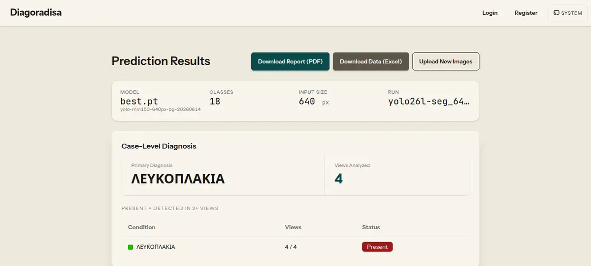
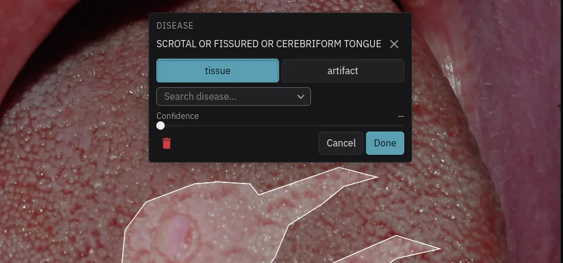
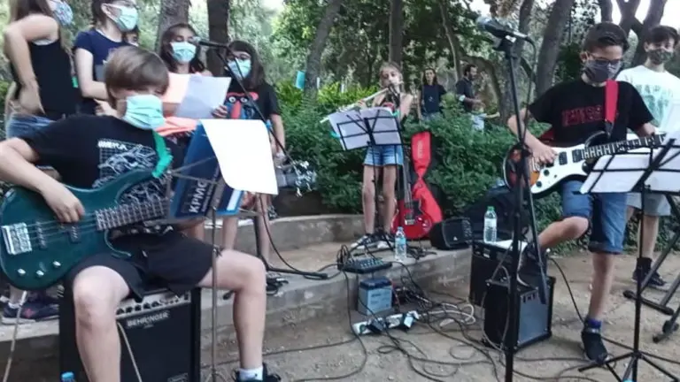

Oral pathology imaging platform
Built and deployed by one developer: annotation tool, dataset pipeline, model server, clinician app.

Case study
Read the case study
Sole developer of all four services: annotation tool, dataset pipeline, model server, clinician app. Sixteen months, 1,629 commits, and a ten-case test with the failures left in.
Open to fullstack roles

Fig. 01The annotation editor, in production. Deep zoom, the polygon tool, and an ICD-10 lookup on the same surface.
Built and deployed by one developer: annotation tool, dataset pipeline, model server, clinician app.

A music and theatre group for children that I co-founded and ran: four programmes, an original musical, and the site.

Nine years as content and web lead inside a Big Four firm: an SEO audit of 4,913 violations became a documented roadmap.
Content and code were one job at KPMG: I ran the web estate, decided what a page said, and built the template that said it.
Content manager · KPMG2010–2018
On the oral pathology platform that meant four services, from the annotation tool to the clinician app.
4services1developer
Each job needed something I did not know yet: ASP at EPIS; Umbraco, SharePoint, and C# at KPMG; Laravel and FastAPI on the platform. I learn it to the depth the delivery needs, then keep it.
VBScript → C# → PHP → TypeScript, in progress
Volume came from agentic tooling: Claude Code, parallel agents across four repositories, skills written for the job. Judgement stays mine — one contract per boundary, a test per claim, and a diff read before it ships.
Claude Code · 4 repos · 1,629 commits
Between roles. I am working through TypeScript, React, and Next.js. The first public app will be linked here when it ships.
Most recent: the oral pathology platform, Jul 2025–Oct 2026, as sole developer.
I'm in Athens, Greece (EET), and open to fullstack roles. I answer every message myself. Tell me what the team is building and what the role owns; that is more useful than a job title.